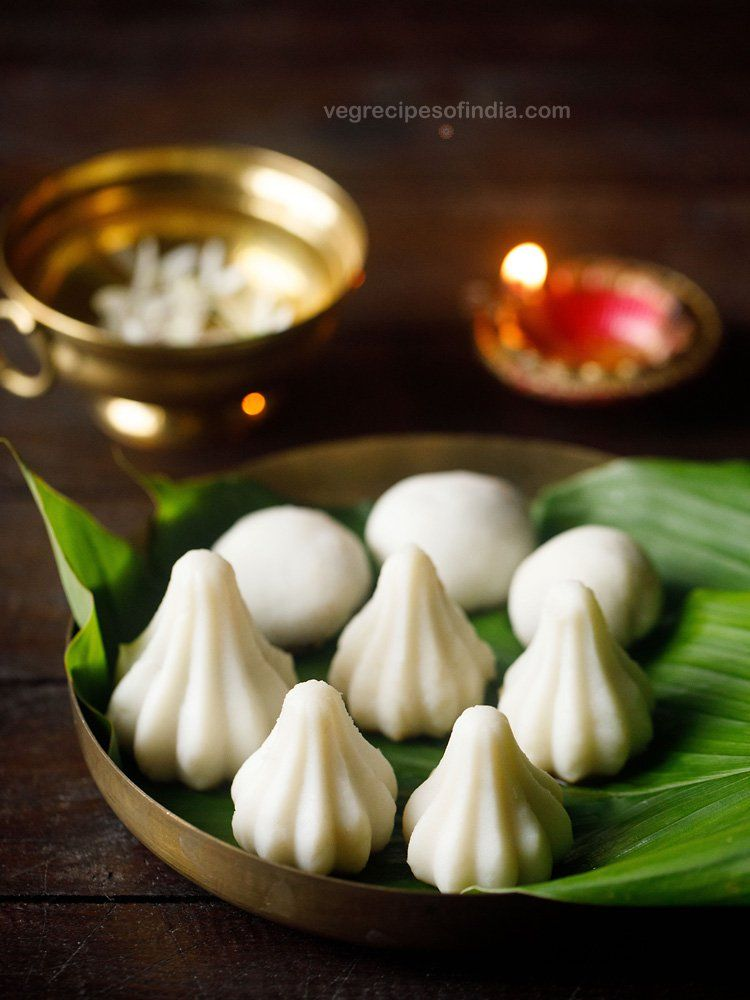

90's vs 2k
KozhukattaiKozhukattai, a traditional South Indian sweet dumpling, has its origins in ancient Tamil culture and is often associated with offerings to Lord Ganesha during festivals like Vinayagar Chaturthi. |
Momos
Momos are a Tibetan-origin dumpling snack, believed to have traveled to Nepal and India through Himalayan trade routes. |
POPULAR SHOPS FOR KOZHUKATTAI
| Shop name | location | Rating | More Details |
|---|---|---|---|
| Sai Kozhukkattai | Shop No 8, Beach, Chennai, Tamil Nadu, India | 4.8/5 | Click here to know more about Sai Kozhukkattai |
| Kozhukattai | Ashok Nagar 1st floor, 4th sector, Chennai, Tamil Nadu, India | 4.1/5 | Click here to know more about Sree Akshayam |
POPULAR SHOPS FOR MOMO
| Shop name | Location | Rating | More Details |
|---|---|---|---|
| Kailash Kitchen | Pachaiyappa's College 2/3, Choolaimedu High Rd, Chennai, Tamil Nadu, India | 4.3/5 | Click here to know more about Kailash Kitchen |
| The Momo Kart | Main road Kodambakkam, Chennai | 4.8/5 | Click here to know more about The Momo Kart |